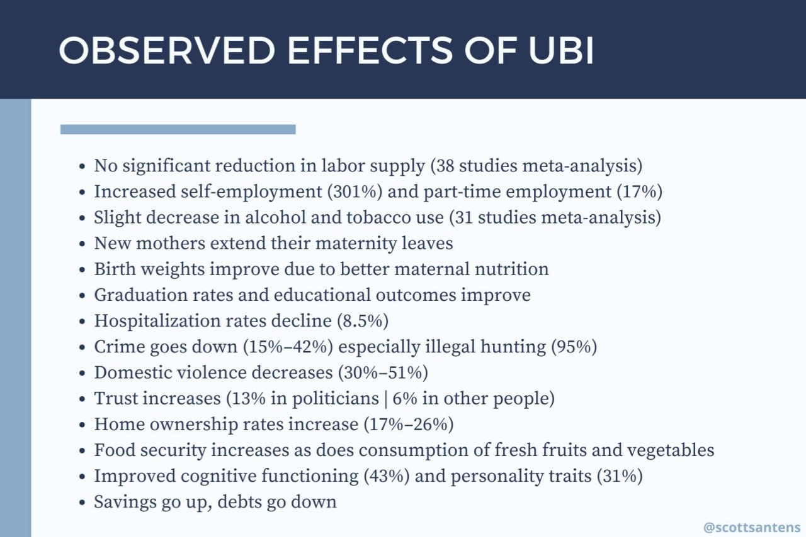

- AI compresses tasks, reorganises firms, and redistributes bargaining power. The central question is not whether AI exposure exists, but whether cheaper cognition expands demand for services quickly enough, in what sectors, and under what institutional arrangements that expansion translates into decent human work rather than higher margins and tighter control by capital: arXiv: AI as Coordination-Compressing Capital.
- Some people like clear, bounded, repetitive work. A humane AI transition cannot assume that “worthwhile work” means dynamic, entrepreneurial, creative, or high-agency work. The social question is not just whether new jobs appear, but whether people retain choice, dignity, income, apprenticeship routes, and bargaining power.
Working thesis
- AI will not simply “take the jobs”.
- AI will take tasks, compress roles, create new service models, and reorganise power.
- The most important fight is over whether AI becomes:
- a labour-replacing surveillance layer owned by platforms;
- or a productivity layer that expands access, supports human expertise, and funds a broader social settlement.
- The human-centred position is not anti-AI. It is anti-extraction.
- The desirable future is not “nobody works”. It is that people have more real choice over work, care, learning, creativity, leisure, and dignity.
Explicitly developed under a for-profit model
- Frontier AI is being developed primarily inside a profit, platform, advertising, cloud, surveillance, and enterprise-automation economy. The risk is not only technical unemployment; it is that productivity gains accrue to model owners, compute owners, cloud providers, and firms with market power.
- The old line that “AI companies are building human-replacement machines” is too crude, but it captures something real. Firms do have incentives to reduce headcount, suppress wages, automate coordination, and convert tacit employee knowledge into institutional software.
- The relevant distinction is:
- task substitution — AI performs work previously done by humans;
- role redesign — jobs remain, but become smaller, more monitored, or more dependent on AI systems;
- demand expansion — cheaper cognition makes previously unaffordable or impossible services viable.
- AI should be understood not only as a labour-supply shock but also as coordination-compressing capital: it lowers the cost not only of writing, summarising, coding, searching, and documenting, but also of coordination, monitoring, and standardisation inside firms: arXiv: AI as Coordination-Compressing Capital.
- Once coordination gets cheaper, firms do not need to eliminate occupations outright to change labour outcomes. They can redesign roles, reduce headcount per unit of output, centralise decision rights, monitor workers more intensively, and convert tacit employee knowledge into institutional software.
- The stronger concern is not “there will be no jobs”. It is:
- thinner firms;
- weaker bargaining power;
- fewer entry-level rungs;
- skill compression;
- more winner-take-most platforms;
- more worker surveillance;
- a political lag between disruption and protection.
What the evidence actually shows
- The evidence base remains early and uneven, but several patterns are now reasonably clear.
- Adoption is real and accelerating. The UK Government’s AI Labour Market Survey 2025 found LLM use at work rising sharply, with use concentrated among younger, more educated, and higher-income workers and in customer service, marketing, and IT. US data shows 55% of Americans and 37% of workers using generative AI tools by early 2026. Adoption curves look like the early personal computer — fast-spreading consumer technology, not a hedge-fund secret edge.
- Productivity gains are real at the task level but heterogeneous. Brynjolfsson, Li, and Raymond found that a generative AI assistant increased customer-support productivity by 14% on average — with a 34% boost for novice and low-skilled workers and minimal effect for expert workers. A 2-month-tenure agent with AI matched the performance of a 6-month-tenure agent without: Brynjolfsson, Li & Raymond: Generative AI at Work. This inverts the doomer prediction: AI compresses the skill distribution rather than widening it.
- Firm-level and macro labour effects remain modest. A large Denmark-based study found widespread chatbot adoption and measurable time savings, yet no significant effect on earnings or recorded hours — with confidence intervals ruling out effects larger than 1%: Large Language Models, Small Labor Market Effects. Daron Acemoglu’s macroeconomic modelling estimates a 0.66% increase in total factor productivity over ten years — about 0.06% per year — comparable to a single decade of normal technological change. Productivity gains that small cannot produce mass unemployment.
- AI-adopting firms are concentrated and skill-intensive. Research finds that AI-adopting firms are larger, more productive, and more skill-intensive, concentrated in IT and scientific activities rather than evenly spread through the economy: AEA: How Different Uses of AI Shape Labor Demand. PwC’s 2025 AI Jobs Barometer, based on close to a billion job ads, reported faster productivity growth in AI-exposed industries, continuing job growth even in many highly automatable roles, and a sizeable wage premium for AI skills: PwC: 2025 Global AI Jobs Barometer. Workers with AI-related skills command wage premiums above 50%.
- The IMF warns that gains may not be broadly shared without active fiscal and social policy: IMF: Broadening the Gains from Generative AI, IMF blog: Fiscal Policy Can Help Broaden the Gains. The same PwC evidence can be read two ways: as proof that augmentation and demand expansion are real, and as proof that gains are being captured mainly by already-advantaged workers, larger firms, and sectors with the capacity to reorganise quickly.
- Anthropic’s Economic Index studies actual AI use rather than only forecasts and points toward a mixed pattern of automation and augmentation, with task-level effects varying heavily by occupation and use case: Anthropic Economic Index, Anthropic: Labor market impacts of AI.
- McKinsey’s future-of-work analysis is useful because it talks about hours and transitions, not only “jobs”. It estimates that activities accounting for up to 30% of US work hours could be automated by 2030, with large occupational transitions concentrated in office support, customer service, food service, and lower-wage work: McKinsey: Generative AI and the Future of Work in America.
- Goldman Sachs’ original 2023 thesis — roughly 300 million full-time-equivalent jobs exposed globally — remains one of the canonical “big number” sources: Goldman Sachs: Generative AI could raise global GDP by 7%. Its later framing is more measured: exposure is not the same as disappearance, and adoption speed matters: Goldman Sachs: How Will AI Affect the US Labor Market?.
- Microsoft’s Work Trend Index frames the “frontier firm” as a workplace rebuilt around human-agent teams. Treat this as both evidence and sales literature: useful for seeing where enterprise AI is going, but not neutral about whether the transition is good for workers: Microsoft Work Trend Index.
The doomer mistake: a historical pattern
- AI doomerism — the argument that AI will hollow out the labour market and leave humanity economically redundant — has become the consensus mood of 2026. It does not survive contact with the evidence.
- The doomer position rests on four claims, each unsupported or contradicted by the data the doomer camp routinely cites:
- that AI represents a categorical break from prior automation, making historical analogies invalid;
- that productivity gains from AI will accrue only to capital, not to workers;
- that the labour market is showing early signs of structural collapse rather than ordinary sectoral rotation;
- that a new social contract is required to manage an inevitable surplus of unemployable humans.
- The strongest version of the doomer case: “Productivity growth and wealth creation are being divorced from jobs and income. Previous technologies augmented human labour; AI substitutes for it. When machines become more economical than humans at both physical and cognitive work, there is simply no role left for humans to escape forward into.” (Composite of OpenAI policy paper and Susskind, A World Without Work.)
- This argument is the oldest mistake in labour economics, restated for 2026. Every generation of technological disruption produces a high-status intellectual movement convinced that this time the historical pattern will break. It is always wrong.
- Historical precedents for “this time is different”:
- 1589 — mechanical knitting frame: Elizabeth I refused the patent; predicted mass unemployment of hand knitters. Knitting industry expanded; textile employment grew for two centuries.
- 1810s — power loom: Luddites predicted weaving as a trade would be destroyed. 98% labour reduction per yard of cloth; cloth consumption surged; textile employment quadrupled.
- 1900 — mechanised agriculture: predicted permanent rural unemployment. US farm employment fell from 41% to 2% of workforce by 2000; total employment grew by ~150 million.
- 1930s — Keynes warned of “technological unemployment” lasting generations. Postwar boom followed; lowest unemployment of the 20th century.
- 1980s–90s — ATM machines: predicted bank tellers would be extinct. Tellers per branch fell from ~21 to ~13; branches multiplied; total teller employment rose ~10–15%.
- 1980s — spreadsheet software: predicted two million bookkeeping jobs destroyed. Bookkeeping declined; financial analyst, auditor, and accountant roles grew by millions.
- 2016 — Geoffrey Hinton: “Stop training radiologists now.” Radiology employment grew; the field is currently short-staffed.
- The pattern is consistent enough to constitute a law: when a technology reduces the cost of performing a task, demand for the output of that task expands, and the residual human tasks become more valuable.
- The doomer counter-argument is structurally invariant across all of these episodes: previous technologies replaced some tasks but left the cognitive frontier untouched; AI replaces the cognitive frontier itself. Elizabeth I’s advisors did not think knitters could become factory operators. Keynes did not think factory operators could become software engineers. The argument’s structure is invariant; only the territory shifts.
- Current AI systems are extraordinarily good at codified cognitive work — the kind of work that can be specified, examined, and trained on. They are markedly worse at tacit knowledge, novel-context judgement, embodied skill, and what David Autor calls “expert intuition.” The entry-level cohort is being displaced precisely because entry-level work is codified work.
- What the data actually shows on the entry-level finding: Stanford Digital Economy Lab’s Canaries in the Coal Mine? (2025) found that workers aged 22–25 in the most AI-exposed occupations experienced a 13% relative decline in employment since late 2022 — extending to nearly 20% for developer employment in the Stanford AI Index 2026. But overall employment in AI-exposed occupations has grown robustly. The Dallas Fed was explicit: this “suggests only a slight impact on the aggregate unemployment rate so far,” driven primarily by fewer people transitioning into employment rather than by layoffs. This is a labour market where the bottom rungs of one ladder have been removed. Not civilisational.
- Why doomerism dominates despite the evidence:
- Commercial incentive: AI labs benefit from the narrative that their technology is so powerful it requires a redesign of civilisation. It justifies valuations, regulatory capture, and the displacement of accountability onto governments. “Our product will break society, so society should pay us to break it carefully” is a remarkable business model.
- Cognitive availability: displaced workers are visible; created jobs are not. The doomer narrative has a constant supply of vivid anecdotes; the rebuttal has only diffuse statistics.
- Status defence: AI is uniquely threatening to the high-credentialed knowledge class — journalists, lawyers, consultants, academics — who shape the discourse. The agricultural mechanisation of 1900 was a story about somebody else. The current automation wave is a story about the people writing the story.
Multiple things can be true at once
- Silicon Valley may be right that many tasks are automatable.
- Robotics will cause enormous real disruption, much of it still unclear.
- Economists may be right that demand expands when production gets cheaper, as it tends to do.
- Labour movements may be right that the transition is brutal without bargaining power.
- The dispute is not really “jobs or no jobs”. It is about:
- who owns the machines;
- who owns the data;
- who controls deployment;
- who captures the productivity gains;
- who bears the transition cost.
Elasticity rather than apocalypse
- Most public debate still treats AI as a labour-supply shock: systems perform tasks once done by people, so employment falls. A stronger framework treats AI as both a substitution shock and a demand shock, because lower cognitive costs can make previously unaffordable, inaccessible, or too-complex services newly viable.
- The old doom model assumes a fixed lump of work: AI does the work, so humans do less. The stronger economic model asks whether cheaper cognition expands what people and firms want to buy.
- The under-reported component is demand elasticity. When cognition becomes cheaper, the relevant economic question becomes: which kinds of demand expand, which new service models become feasible, and who captures the surplus? The answer determines whether AI creates broader access and new middle-skill roles or instead produces thinner firms, fewer entry-level rungs, weaker labour share, and stronger platform concentration.
- Alex Imas’s What will be scarce? is the cleanest articulation of this newer frame. If AI makes many forms of production cheap, then value may shift toward what remains scarce: provenance, human involvement, Privacy, Trust and Safety, taste, relationship, embodied presence, and status.
- Ezra Klein’s Why the AI job apocalypse probably won’t happen brings that argument into mainstream political discourse. The important move is not blind optimism; it is the claim that economists are more sceptical of permanent mass unemployment than the AI labs’ own marketing implies.
- Jasmine Sun’s Silicon Valley Is Bracing for a Permanent Underclass represents the other pole: people close to AI development increasingly fear that ordinary people lose economic leverage as software and robotics improve. This is valuable because it captures the worldview inside parts of Silicon Valley, even if that worldview is probably distorted.
Demand elasticity: where new work may come from
- If AI reduces the price of cognitive services, standard economics suggests quantity demanded may rise — but the size of that rise depends on the elasticity of demand, the degree of unmet need, the presence of institutional bottlenecks, and whether people actually value AI-only delivery or still require human accountability, trust, or embodied presence.
- Many services are under-consumed today not because people do not want them, but because they are too expensive, too scarce, too confusing, too geographically constrained, or too intermittent. AI can relax those constraints by lowering the cost of documentation, triage, translation, navigation, and personalisation.
- The elasticity framework makes AI a question of economic design rather than technological destiny. See also Efficiency AI vs Growth AI.
- Price elasticity: lower-cost cognitive services can attract buyers previously priced out, especially small firms and lower-income households. Example: small businesses buying design, legal, analytics, or marketing support that used to be unaffordable.
- Access elasticity: AI reduces provider scarcity, geography, waiting lists, or institutional bottlenecks, allowing more people to consume services with latent demand.
- Complexity elasticity: AI makes opaque systems navigable — taxes, benefits, immigration, healthcare, insurance, procurement, compliance.
- Continuity elasticity: services move from episodic to continuous — health monitoring, coaching, financial planning, education, care coordination.
- Personalisation elasticity: people move from generic products to versions tailored to their context.
- Relational elasticity: in some domains, AI may expand the market for human-delivered services because trust, judgement, accountability, or provenance become more valuable when routine production is cheap.
- This turns the AI jobs question into an economy-design question: which sectors have suppressed demand because services are too expensive, too scarce, too confusing, too generic, or too episodic?
- Likely expansion sectors:
- infrastructure buildout for data, compute, Energy and Power, and Robotics;
- training and bespoke education;
- Health navigation and preventative care;
- elder care and family coordination;
- mental health and peer support;
- small-business professional services;
- legal self-help plus human escalation;
- Privacy, Trust and Safety and Governance and safeguarding;
- bespoke human-made goods, events, hospitality, and experience design.
The apprenticeship problem
- One of the most important risks is not outright technological unemployment but the erosion of entry-level pathways. Many junior workers learn by doing the exact routine documentation, drafting, coordination, and analytical tasks that AI can now partially automate.
- If those tasks disappear from beginner roles, firms may still employ senior staff while cutting the bottom rungs that once supplied future expertise. Even if AI makes more services affordable, a system that destroys apprenticeship routes may still produce a brittle economy with fewer ways to build skill, weaker bargaining power for new entrants, and a long-run shortage of experienced human workers.
- The most exposed work is not always the least skilled. Generative AI reaches into writing, coding, marketing, legal support, administrative coordination, customer service, HR, translation, analytics, and management reporting.
- AI can also compress skill differences. The Brynjolfsson customer-support study suggests novices benefit most, which can democratise expertise, but may also reduce the wage premium for experience if firms treat AI output as a substitute for developed skill: Brynjolfsson, Li & Raymond: Generative AI at Work.
- Anthropic’s 2026 labour-market analysis highlighted signs that hiring of younger workers in at-risk roles may be slowing even in the absence of a broad unemployment spike: Anthropic: Labor market impacts of AI.
- The UK Department for Education analysis estimates significant exposure across professional and administrative work: UK DfE: Impact of AI on UK Jobs and Training. See also Layoff tracker and threatened roles.
- Recent UK labour-market work on AI skills and training points to a need for stronger projections, skills investment, and institutional support rather than assuming that market-led adoption will naturally generate robust progression routes: UK Gov: AI Skills for Life and Work.
- The most important distinction is exposure vs displacement:
- tasks are exposed;
- roles are redesigned;
- occupations transition;
- bargaining power shifts;
- some workers are displaced.
Creative tech and the supply-demand mismatch
- Creative tech is one of the least straightforward sectors in the AI transition. It is often presented as a beneficiary because generative tools lower the cost of image production, editing, pre-visualisation, prototyping, asset creation, localisation, and post-production, and because the UK has an established base in film, television, games, music, design, VFX, advertising, and creative software.
- But creative markets are not simple cases of suppressed demand waiting to be unlocked. In many creative domains, supply was already abundant before generative AI. The binding constraints were attention, distribution, commissioning budgets, trust, intellectual property, and the ability to convert audience interest into durable income. Lowering production costs further may therefore increase output far more than it increases paid demand.
- That is the core supply-demand mismatch. AI can flood markets with more music, images, scripts, trailers, design variants, and marketing assets, but the number of audience hours, commissioning slots, editorial budgets, and cultural gatekeepers does not expand at the same rate. In such markets, cheaper supply does not automatically create more paid creative work; it can instead intensify competition, push prices down, and shift value toward platforms, aggregators, and owners of distribution.
- This makes creative tech different from sectors such as healthcare, where unmet need is obviously large and demand is often suppressed by cost and access barriers. In creative industries, AI may expand experimentation and lower barriers to entry while still weakening average earnings for creators if monetisable demand does not grow in parallel.
- The UK evidence:
- The Creative Industries Policy and Evidence Centre has highlighted skills mismatches across the UK creative industries: Creative PEC: Skills Mismatches in UK’s Creative Industries. Later PEC work reported rapidly rising demand for workers combining creativity with AI-related capabilities — suggesting growth in hybrid roles, but not a broad-based expansion in paid creative labour: Creative PEC: Demand for Creativity and AI Skills.
- The CoSTAR Foresight Lab (Goldsmiths) warned that generative AI offers real workflow gains across the screen sector but also poses significant legal, ethical, skills, and business-model risks, particularly where copyright is undermined and worker displacement is treated as a cost-saving opportunity rather than part of a transition strategy: Goldsmiths / CoSTAR: AI Threats to UK Screen Sector.
- IPPR’s analysis found that AI exposure is high in the UK and transitions will require active policy support: IPPR: Transformed by AI.
- The copyright fight is central, not peripheral. If model developers can train on creative work without meaningful transparency, consent, or compensation, AI improves supply-side efficiency by drawing value out of the sector while weakening the revenue base that supports original creation. UK unions, industry bodies, and policy researchers have argued that the design of copyright and licensing rules will determine whether AI complements British creative production or erodes it: The Guardian: UK Unions Call for Action, NMA: Make it Fair campaign.
- The employment upside in creative tech is likely to come less from mass expansion of traditional creative roles and more from a narrower set of hybrid occupations: AI-assisted producers, workflow designers, rights and licensing specialists, creative toolchain engineers, provenance and authenticity services, and human-led premium creative work where originality, reputation, taste, and live or embodied presence remain central to value.
- Demand may expand in adjacent categories — localisation, rapid prototyping, niche content production, virtual production, accessible tools for independent creators, AI-enabled services sold to brands and studios — but in core expressive markets, the likely immediate effect is often not unmet demand being unlocked, but oversupply colliding with scarce attention and fragile monetisation.
The human premium
- The AGI objection is: “won’t AI just eat the new jobs too?” The better question is not “can AI perform the task?” but “does AI-only delivery satisfy the demand?”
- The human premium is the portion of economic value that remains attached to human involvement even when AI can perform many underlying tasks. It is not merely residual sentimentality — it may be a precondition for demand expansion in domains where people will not buy fully automated services at scale without accountable humans in the loop. This is especially true where the service affects health, legal rights, education, employment, money, or personal safety.
- Sources of human premium:
- Relationship: continuity, memory, accumulated trust.
- Embodied presence: someone physically there with you.
- Trust: a human validates, interprets, reassures, or challenges.
- Accountability: someone signs off, escalates, owns risk, and can be blamed or sued.
- I’ve been talking about humans meeting humans in public places where they can be assured they’re talking to a real person, a bag of meat they can sue, both backed by swarms of agents, for years now.
- Translation: someone turns messy human desire into usable AI-mediated work.
- Behaviour change: people often need human accountability to act on advice.
- Provenance and status: “human-made” or “human-delivered” is part of the value.
- This aligns with David Autor’s argument that AI could rebuild parts of the middle class if it extends expertise rather than replacing workers. AI can extend the reach of expertise by allowing more workers with complementary training to perform portions of higher-stakes work, but only when systems are designed to support workers rather than replace them. Autor is explicit that this is not a forecast; it is a possibility that depends on institutions and deployment choices: David Autor: AI Could Actually Help Rebuild the Middle Class, NBER: Applying AI to Rebuild Middle Class Jobs.
- Martin Ford’s “safe” categories still map well to the human premium:
- genuine creatives making new ideas;
- sophisticated interpersonal relationships;
- physically demanding and complex work.
- The future may not reward humans for being worse machines; it may reward humans for being visibly, accountably, relationally human. But this optimistic path is not automatic. Without institutions, the same technology can deskill work, weaken wages, and turn human beings into low-paid exception handlers for machines.
- See also The A.I. Economy Will Make Jobs More Human.
New role families
- The most plausible new jobs are not all “prompt engineer” jobs. They are domain jobs made viable by AI.
- Role families to watch:
- Navigators — help people move through systems too complex to face alone: healthcare, law, benefits, education, immigration, finance.
- Continuous support workers — provide human follow-through around AI-monitored systems.
- AI-augmented service operators — deliver cheaper professional services to markets that were previously priced out.
- Data and operations specialists — keep AI-mediated services reliable inside real institutions.
- QA, safety, compliance, and audit workers — test whether AI systems are legal, fair, safe, secure, and accountable.
- Escalation specialists — handle the difficult cases that AI routes upward.
- Human provenance workers — craftspeople, performers, hosts, teachers, guides, carers, coaches, and experts whose humanity is part of the product.
- The risk is that these roles are made precarious, surveilled, and low-paid. The opportunity is that they become new middle-skill, middle-income work.
Healthcare as the clearest elasticity case
- Health has almost every demand elasticity globally, though perhaps somewhat less in the UK and Europe because of different public provision models.
- People would consume more care if it were cheaper or access were easier.
- People need help navigating complexity.
- Preventative and continuous care are under-supplied.
- People value personalisation, relationship, and trust.
- AI can reduce the cost of surveillance, documentation, summarisation, triage, and personalised follow-up. That can expand demand not only for software, but also for new kinds of human work:
- continuous care, care-plan, and outcome specialists;
- health-data operations specialists;
- medication and adherence coordinators;
- family-care liaisons;
- AI safety and escalation reviewers.
- The AI layer watches, summarises, flags, routes, documents, and predicts. The human layer listens, reassures, interprets, challenges, escalates, and remains accountable.
- This is the pattern that much of the public debate misses. The question is not whether AI can automate pieces of healthcare, but whether lower cognitive costs can make a thicker layer of human-supported continuous care viable. If payment systems, liability rules, and staffing models route the gains into service expansion, employment can grow around the new layer; if they route the gains only into cost cutting, labour will be compressed instead.
- This is not guaranteed. It depends on reimbursement, liability, regulation, health-system capacity, and whether institutions choose human-centred design over pure cost cutting.
The UK frame
- The UK is a particularly useful case because it combines a service-heavy economy, a large creative sector, substantial exposure in professional and administrative work, and a policy environment that remains more fragmented and sector-led than the EU’s broader regulatory model.
- The DfE analysis estimated especially high exposure in professional occupations, associate professional roles, and administrative work — reinforcing the point that generative AI reaches into white-collar task bundles rather than only into low-paid routine labour: UK DfE: Impact of AI on UK Jobs and Training.
- The UK has a long-standing productivity problem, weak recent wage growth, regional inequalities, and a labour market with large numbers of workers in service roles where AI may compress tasks without automatically generating higher-quality employment. The key issue is less whether the UK adopts AI at all than whether adoption expands socially useful demand and strengthens domestic capability, or instead deepens dependence on foreign model providers while weakening local bargaining power and entry-level work: UK Gov: AI Skills for Life and Work.
- A service-led economy can benefit from lower cognitive costs in law, finance, marketing, education, health administration, and public services, but those gains can still be captured by a small number of platforms, consultancies, and large employers unless institutions deliberately support diffusion, training, and labour standards.
- The UK case brings the elasticity-versus-capture tension into sharp focus. In a service-led economy with a globally significant creative base, AI could either support broader access, stronger domestic capability, and new hybrid forms of human-centred work — or it could intensify extraction from workers and creators while value accrues to foreign model firms, platforms, and domestic incumbents. The practical question is not whether AI arrives, but which institutional settlement decides who benefits.
Potential impact on cities
- The strongest research does not show knowledge work simply “leaving cities for data centres”. It shows a split:
- human work becomes more hybrid and spatially distributed;
- the computational substrate of work becomes concentrated in data-centre infrastructure, likely where energy is cheap or latency is paramount;
- city centres lose some five-day commuter gravity;
- metropolitan regions remain important because hybrid work still values access to urban networks, culture, clients, care, and amenities.
- Remote work initially disperses activity away from city centres, but much of the movement remains inside the same metro area. Ramani/Bloom: How working from home reshapes cities show that many households leaving big-city centres moved to suburbs of the same city. This supports a hybrid metropolitan model rather than a rural-exodus model.
- Liu & Su: WFH and agglomeration economies find that high-WFH occupations saw a decline in the urban wage premium and some employment movement from large to smaller cities. This suggests remote work weakens some agglomeration economies, especially those based on relationship-building, knowledge spillovers, and physical interaction.
- University of Sheffield: remote working and local economies estimates that remote working shifts retail and hospitality spending out of the largest city centres in England and Wales, moving activity toward residential suburbs and changing the geography of service work.
- The UK Department for Transport argues that agglomeration must be broken into sharing, matching, and learning effects. Remote work directly affects labour-market matching and can reduce the agglomeration benefits of transport improvements: DfT: Remote working and agglomeration.
- Data centres become the industrial hinterland of knowledge work: essential, capital-intensive, low-footfall, power-hungry, and politically contested.
- Data centres underpin cloud computing, AI, public services, and economic activity, but they do not replace the social density of the city. They convert knowledge work into energy, water, land, cooling, fibre, substations, tax, and planning pressure: UK POSTnote: What are data centres and how sustainable are they?.
- Data centres affect energy grids, water systems, land use, quality of life, and local cost recovery. The question is whether they create long-term prosperity or simply shift infrastructure risk onto residents: WRI: 7 ways data centers affect communities.
- Data-centre electricity demand is projected to rise sharply, with AI-focused centres growing faster: IEA: Key Questions on Energy and AI. See also Energy and Power.
- The city living model shifts from “live near the office” to “live within access range of networks, culture, clients, care, and amenities”.
- The CBD becomes less of a compulsory work machine and more of a high-value interaction, culture, governance, and experience district.
Power, privacy, and personal sovereignty
- AI concentrates power where there is compute, data, distribution, cloud infrastructure, model access, and enterprise integration.
- The privacy problem is now larger than targeted advertising. AI systems ingest, infer, summarise, predict, and act on behalf of institutions. They can become an ambient management layer.
- Risks:
- algorithmic management and workplace surveillance;
- automated performance evaluation;
- opaque hiring and firing systems;
- AI-generated manipulation and hyper-personalisation;
- model-mediated access to information;
- copyright extraction and uncompensated training data;
- safety theatre replacing binding accountability.
- The lesson from Cambridge Analytica was not fully absorbed. Voluntary commitments are not enough when the business model rewards behavioural prediction and persuasion.
- At the very least, these firms are operating inside advertising, platform, cloud, and enterprise-retention models. If the soft power of Generative AI is used for hyper-personalised advertising, persuasion, and behavioural steering, the result could be dystopian.
- The EU AI Act entered into force on 1 August 2024 and established a risk-based framework with obligations for high-risk systems and transparency rules for certain AI uses, including recruitment and medical software: EU AI Act enters into force, European Commission: AI Act — though recently Germany especially seems to be losing confidence in an idea they helped spearhead.
- The UK remains more cautious and sector-led, with copyright still unresolved: UK Gov: Copyright and Artificial Intelligence consultation, UK Gov: Report on Copyright and AI 2026, UK AI Opportunities Action Plan.
- The US approach is more contested and leans toward national competitiveness, infrastructure, and security review rather than a single comprehensive AI law: America’s AI Action Plan, White House AI Action Plan PDF.
- See also Privacy, Trust and Safety, Politics, Law, Privacy, Governance and safeguarding.
Labour movements and bottom-up governance
- Governments are too slow to respond alone. This will likely be shaped through bottom-up labour movements, sector-by-sector bargaining, litigation, procurement rules, and professional standards.
- The Writers Guild remains the best early example of worker bargaining over AI. Its 2023 agreement established protections around credit, compensation, and the use of AI in writing work: WGA: Artificial Intelligence, Brookings: Hollywood writers’ AI victory.
- This is probably the model: not waiting for governments to understand the technology, but bargaining over:
- consent;
- disclosure;
- pay;
- credit;
- training data;
- monitoring;
- redeployment;
- human review;
- apprenticeship protection.
- The social contract needs to be renegotiated at multiple levels:
- law;
- unions;
- procurement;
- professional standards;
- education;
- tax (this is under strain in a world of borderless AI agents);
- welfare;
- platform governance.
Renegotiating the social contract
- The political task is to stop treating AI as either destiny or apocalypse. It is a deployment struggle.
- The new social contract should answer:
- Who owns the productivity gains?
- Who has the right to refuse automation?
- Who gets retraining, and who pays?
- What happens to entry-level work?
- What must remain human-reviewed?
- When must AI use be disclosed?
- How are creators compensated when their work trains models?
- How do we tax capital substitution for labour?
- How do we protect people who prefer stable, repetitive, bounded work?
- The Federal Reserve’s scenario-based approach is useful because it refuses a single forecast and instead treats AI as a set of possible labour-market paths depending on adoption, diffusion, institutions, and policy: Federal Reserve: Artificial Intelligence and the Labor Market.
- The “desirable future” frame matters. The question is not only what is technically possible. It is what society chooses to make normal.
The art of the desirable vs imposed futures
- Helen Wilding highlights a crucial aspect often missed by “tech bros exploring the art of the possible”: some people genuinely prefer clearly defined, repetitive roles.
- It is not for a privileged minority to dictate what counts as worthwhile work and unilaterally reshape the employment landscape, removing options that many find fulfilling.
- The transition to an AI-driven future must be guided by the art of the desirable, fostering social consensus and prioritising individual choice rather than imposing a singular vision of progress. The “art of the desirable” framework demands that we consider the needs and desires of all workers, not just those who thrive in dynamic, creative environments.
- Protecting choice: individuals should have the option to pursue roles that suit their preferences, whether those roles involve repetitive tasks or complex problem-solving.
- Investing in human-centred training: reskilling should not focus only on technical AI skills, but also communication, empathy, critical thinking, and judgement.
- Fostering social dialogue: the future of work should be determined through open discussion involving workers, policymakers, and technologists.
- Prioritising wellbeing and fulfilment: the new social contract must value mental health, fair wages, reasonable working hours, and social dignity, especially during transitions.
A new valuation for human capital
- AI may raise the value of certain human capabilities precisely because it makes technical production cheaper.
- Human capabilities likely to become more valuable:
- trust-building;
- taste;
- judgement;
- care;
- embodied skill;
- facilitation;
- conflict resolution;
- accountability;
- teaching;
- translation between humans and systems;
- knowing what is worth doing.
- This connects to the relationship economy and the human premium. The future may not reward humans for being worse machines; it may reward humans for being visibly, accountably, relationally human.
- But this optimistic path is not automatic. Without institutions, the same technology can deskill work, weaken wages, and turn human beings into low-paid exception handlers for machines.
- See also The A.I. Economy Will Make Jobs More Human.
Notes and fragments to develop
Adjacent theme: Virtual Reality, AI, and elder care
- Elder care is one of the strongest examples of technology expanding human care rather than replacing it.
- VR and mixed reality may reduce isolation and provide stimulation, memory support, travel-like experiences, and social connection for older adults.
- Sources:
Public perception and backlash
-
There are signs of a growing public backlash against AI, driven by perceived unreliability, copyright extraction, job fears, surveillance, and cultural degradation.
-
Polls and surveys are noisy, but the overall pattern is consistent: many workers use AI and find it productive, while also becoming more worried that it could replace or devalue their work.
-
Useful survey clusters to revisit:
- CNBC polling on productivity and worker concern;
- Beamery on AI in UK recruitment;
- edX on executive expectations for skills and entry-level work;
- Asana on workers’ estimate that a large share of tasks are replaceable;
- Deloitte, LinkedIn, Microsoft, and ServiceNow on worker preparedness and training gaps.
-
Bill Gurley on X: What’s really happening in the background around AI regulation

-
Silicon Valley is already showing signs of fetishising AI; this belongs in Singularity.
-
AI and Universal Basic Income

- Sam Altman talking UBI at 50 minutes.
-
CEO and management disruption:
-
Software and developer disruption:
- AWS CEO Matt Garman reportedly told employees that most developers may stop coding directly as AI changes software work.
- The better framing is probably not “developers disappear”, but “coding becomes less of the scarce skill; product judgement, architecture, customer understanding, and agent orchestration become more important”.
-
Other useful links:
- AI May Not Steal Many Jobs After All
- The impact of artificial intelligence on employment: the role of virtual agglomeration
- OSF Preprints: The Uneven Impact of Generative AI on Entrepreneurial Performance
- The Shorter Working Week: Autonomy
- Nobel laureate Chris Pissarides on AI and the four-day week
- IBM CEO on working hand in hand with AI
- Taser Company Axon Is Selling AI That Turns Body Cam Audio Into Police Reports
- AI key to future national security decision making, but brings its own risks
- arXiv: AI as Coordination-Compressing Capital
- AEA: How Different Uses of AI Shape Labor Demand
- SSRN: Large Language Models, Small Labor Market Effects
- UK Gov: AI Labour Market Survey 2025